Besluiten en overzichtslijsten kunnen elektronisch bezorgd worden aan de toezichthoudende overheid.
Berichtgeving over besluiten en overzichtslijsten vanuit de toezichthoudende overheid worden hier verzameld en beantwoord.
De beleids- en beheerscyclus digitale rapportering (BBC-DR) kan bezorgd worden aan de Vlaamse Regering.
Het mandatenbeheer kan beheerd worden voor volgende bestuursorganen gemeenteraad, college van burgemeester en schepenen, raad voor maatschappelijk welzijn, vast bureau en bijzonder comité voor de sociale dienst.
In het leidinggevendenbeheer houdt u de leidinggevende functies voor uw bestuur bij.
In het personeelsbeheer houdt u de personeelsaantallen voor uw bestuur bij.
In het subsidiebeheer volgt u aanvragen voor subsidiemaatregelen op.
Om toegang te krijgen tot het loket lokale besturen, moet u als gebruiker gekend zijn in de gebruikersbeheer lokale besturen. De lokale beheerder die in elk bestuur aanwezig is kan u hier toegang tot geven. Meestal is dit de secretaris/algemeen directeur, griffier of iemand die door de organisatie werd aangeduid. U gaat dus best bij hen ten rade als u niet weet wie uw lokale beheerder is. Meer informatie over gebruikersbeheer.
Om optimaal gebruik te maken van de applicatie, gebruikt u best Chrome, Firefox of Safari (Mac).
Het kan echter dat bepaalde functionaliteiten niet (volledig) werken zoals het hoort. Mocht u dit opmerken, kunt u ons dit altijd laten weten via LoketLokaalBestuur@vlaanderen.be.
Voorpagina
Aanmelden verloopt via het gekende gebruikersbeheer Vlaanderen. Klik op de knop "meld u aan" om verder te gaan.
Pop-up
Vervolgens verschijnt er een popup, die u enkele veilige opties voorstelt om u mee aan te melden. Verschijnt de popup niet? Zorg dat de instellingen van uw browser goed staan.
Indien u toegang heeft tot meerdere bestuurseenheden, krijgt u in de pop-up de optie om een bestuurseenheid te kiezen.
Na het kiezen van een bestuurseenheid, bent u ingelogd. De applicatie ziet er zo uit:
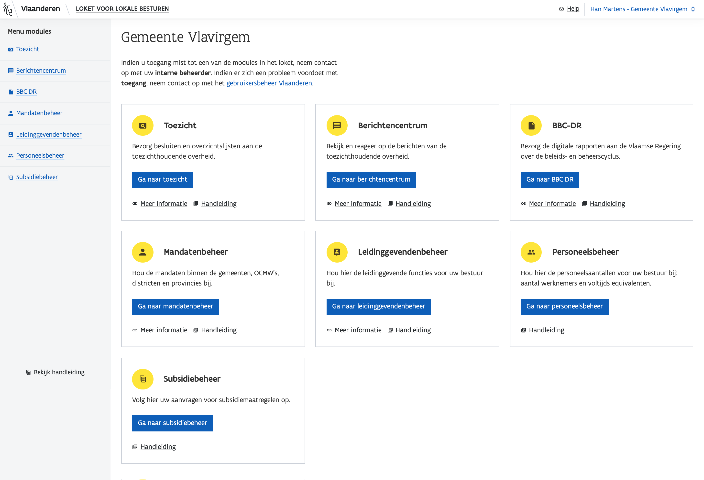
Wisselen van bestuurseenheid en afmelden
Indien u toegang heeft tot meerdere bestuurseenheden, kan u wisselen van bestuurseenheid door rechtsboven op uw bestuurseenheid te klikken.
U krijgt daar de optie om u af te melden, of om ervoor te kiezen om te wisselen van bestuur.
U krijgt dan opnieuw de pop-up te zien waar u eerst selecteert dat u zich wil aanmelden voor een lokaal of provinciaal bestuur. Zorg ervoor dat uw browser deze pop-up ook toestaat.Bekijk hoe u popups toestaat
Vervolgens kiest u de juiste bestuurseenheid.
Probleem
Indien u toegang wil aanvragen tot het loket, neem contact op met uw lokale beheerder. Indien er zich een probleem voordoet, bekijk de mogelijke problemen en hun oplossingen op gebruikersbeheer Vlaanderen. Vindt u daar het antwoord niet, neem contact op met 1700.
Overzicht
Eens u aangemeld bent, krijgt u een overzicht van al de onderdelen waar u toegang tot heeft in het loket. Klik op de knoppen in een van de kaartjes, of navigeer via knop "Menu modules" bovenaan naar het juiste onderdeel.
Na het kiezen van een module, kan u bovenaan altijd terugkeren naar het hoofdmenu of op de dropdown "Menu Modules" klikken.
Indien u toegang wil aanvragen tot bepaalde onderdelen van het loket, neem contact op met uw lokale beheerder Indien er zich een probleem voordoet, bekijk de mogelijke problemen en hun oplossingen op gebruikersbeheer Vlaanderen. Vindt u daar het antwoord niet, neem contact op met 1700.
Toezicht
De module toezicht laat u toe om – afhankelijk van het type bestuur – stukken over te maken aan het Agentschap Binnenlands Bestuur i.k.v. de meldingsplicht.
Stukken of besluiten die u niet terug vindt in de keuzelijsten hoeft u niet te melden aan de toezichthoudende overheid.
Locatie
U kan via de knop "Menu modules" bovenaan of het kaartje naar het onderdeel toezicht navigeren. Hier kunt u stukken melden aan de toezichthoudende overheid.
Overzicht & bekijken
In eerste instantie zal uw overzicht leeg zijn. Concepten en verstuurde dossiers komen in dit overzicht terecht. U kan een nieuwe melding maken door op de knop Maak nieuwe melding te klikken.
Bekijken
U kan de details van een dossier bekijken door op Bekijk te klikken. U krijgt extra informatie zoals degene die het gewijzigd heeft, en wanneer het dossier al dan niet verstuurd werd.
Een nieuwe melding maken
Via de knop rechts Maak nieuwe melding kan u een type besluit of besluitenlijst versturen.
Eerst kan u bij het veld Type dossier kiezen tussen de dossiers die u kan aanleveren. U kan scrollen doorheen de lijst, of typen in het zoekveld om het type dossier te vinden.
Een formulier verschijnt. Vul al de verplichte velden in, en klik dan op "verstuur". U kan tussentijds concepten bewaren.
Verplichte velden
Afhankelijk van het type dossier dat u kiest, krijgt u andere velden om in te vullen. De velden die verplicht zijn:
Type dossier
Welk beslissingsorgaan nam het besluit?
Datum zitting/besluit
Datum publicatie
Soort Belasting (staat niet in elk formulier)
Naam betreffend bedrijf/bestuur (staat niet in elk formulier)
Datum besluit betreffend bedrijf/bestuur (staat niet in elk formulier)
Rapportjaar (staat niet in elk formulier)
URL of Bijlage (Een bijlage kan maximaal 1024 mb zijn. Gebruik best geen .zip, .exe of .rar bestanden.)
Een wijziging doorvoeren
Een verstuurd dossier kan enkel bekeken worden. U kan de bijlagen wel downloaden, maar niet aanpassen of verwijderen. Indien u een fout hebt gemaakt, maakt u een nieuwe melding en verstuurt u het dossier opnieuw.
Een concept kan bewerkt worden en bewaard, verstuurd of verwijderd.
Berichtencentrum
We gebruiken de Module Berichtencentrum voor een deel van de digitale communicatie tussen de lokale besturen en de toezichthoudende overheid.
Overzicht communicaties
Volgende communicaties gebeuren via deze module:
De opvraging van de toezichthoudende overheid van een besluit en of van het dossier (art. 331, eerste lid van het DLB – art. 247 van het PD)
Het bezorgen van het opgevraagde beluit en het dossier (art. 332, §6, eerste lid van het DLB – art. 248, §6, eerste lid van het PD)
Het kennisgeven aan het bestuur van het antwoord aan de indiener van een klacht en, in voorkomend geval, van opmerkingen aan het bestuur (art. 333, tweede lid van het DLB – art. 250, tweede lid van het PD)
Het bezorgen van het vernietigingsbesluit en bijhorende brief aan het bestuur (art. 329 van het DLB – art. 244 van het PD)
Locatie
U kan via de overzichtspagina of via de knop "Menu modules" naar het berichtencentrum navigeren.
Overzicht en Bekijken
In eerste instantie zal uw overzicht leeg zijn. Gestuurde en ontvangen communicaties komen in dit overzicht terecht. Per dossier bij de toezichthoudende overheid (bv. de behandeling van een klacht), zal u een rij zien in uw overzicht. In uw overzicht ziet u per dossier wie het laatste bericht heeft verstuurd en op welke datum dit gebeurde.
Klik op een van de hoofdingen in de tabel om te sorteren per kolom. Een pijltje zal verschijnen met de richting.
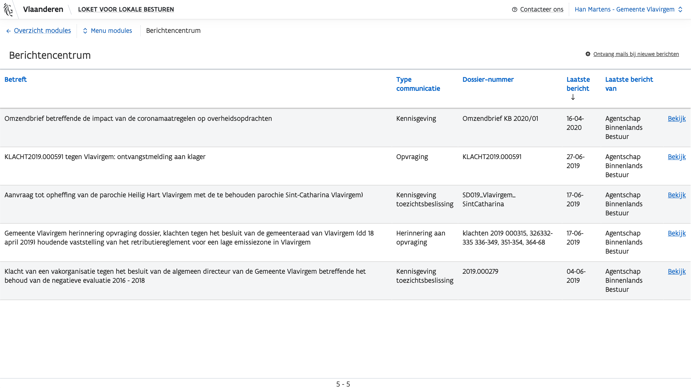
Bekijken
U kan de details van een dossier bekijken door op Bekijk te klikken. U krijgt een chronologisch overzicht van de communicaties die reeds gebeurd zijn in dit dossier. De laatste communicatie staat altijd onderaan. Door naar boven te scrollen, kunt u de vorige communicaties bekijken (afzender, datum van versturen) Hier kunt u ook de bijlagen bekijken en downloaden die werden meegestuurd in de communicaties.
Een verstuurd dossier kan enkel bekeken worden. U kan de bijlagen wel downloaden, maar niet aanpassen of verwijderen.
Een communicatie sturen
U kan enkel een communicatie sturen naar de toezichthoudende overheid als reactie op een reeds gebeurde communicatie:
U kan reageren op een opvraging of een herinnering aan een opvraging door de toezichthoudende overheid.
U kan reageren op een kennisname van een toezichtsbeslissing door de toezichthoudende overheid.
Via de knop Bekijk in het overzicht gaat u naar het specifieke dossier waarop u wilt reageren. Onderaan de communicatiestroom die u ziet in de rechterzijde van uw scherm, vindt u de knop Plaats reactie.
Klik op Bekijk om de detailpagina te openen, en scroll naar beneden.
Klik vervolgens op Plaats reactie om een nieuw bericht te versturen.
Voeg de bestanden toe die van toepassing zijn. Deze zijn gelimiteerd tot tekstbestanden zoals Word-documenten en PDF.
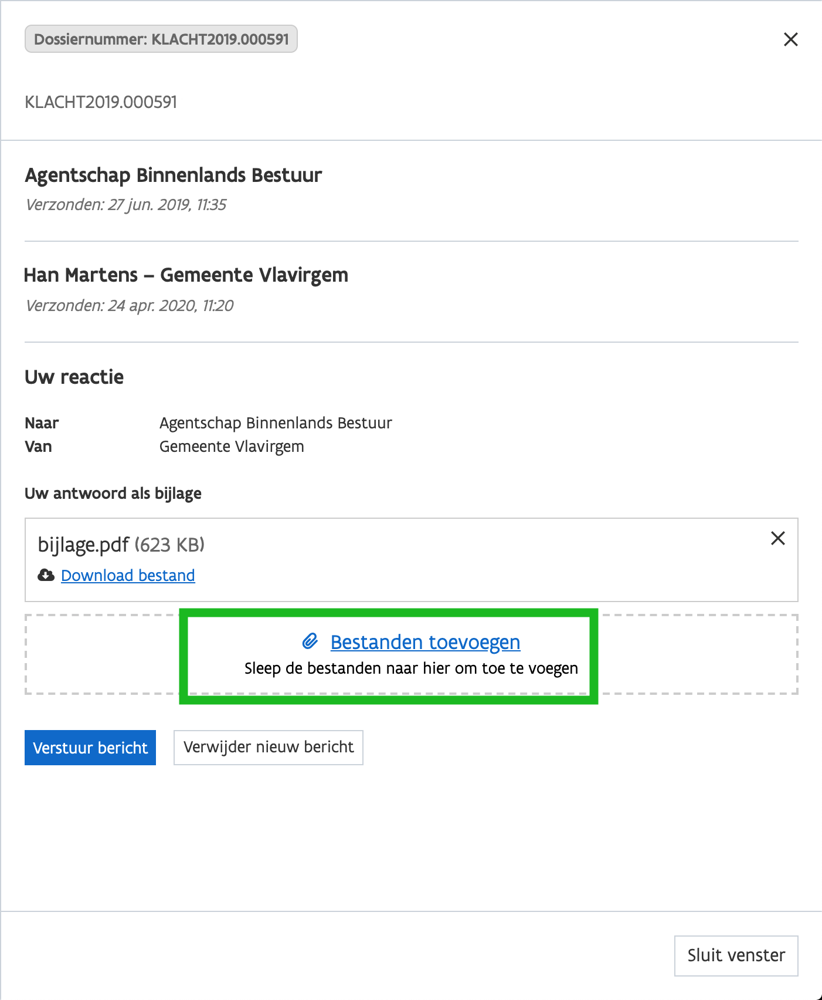
Na het opladen van bestanden, kan u op Verstuur bericht klikken.
Uw reactie wordt bijgehouden, en u kan de bestanden later ook opnieuw downloaden.
Alle communicatie dient via het opladen van bijlagen te gebeuren. Het versturen van deze documenten vervangt de papieren briefwisseling. We voorzien verder geen invulvelden in deze toepassing waar u bv. extra informatie zou kunnen meegeven. Via de knop Verstuur bericht, wordt deze communicatie verstuurd naar de toezichthoudende overheid.
Mailnotificaties
Als er een communicatie wordt gestuurd door de toezichthoudende overheid, kan u hiervoor een notificatiemail ontvangen. U beheert zelf wie deze mails kan ontvangen.
Rechts op uw overzichtscherm vindt u daarom de mogelijkheid om dit te beheren.
Als u in de hoofding op Ontvang mails bij nieuwe berichten klikt, komt er een pop-up tevoorschijn. Hier kan u ingeven naar welk mailadres de notificatiemails gestuurd moeten worden.
BBC-DR (Beleids- en Beheerscyclus Digitale Rapportering)
Onmiddellijk na de verzending van een beleidsrapport aan de toezichthoudende overheid moet u over dat vastgesteld beleidsrapport ook de Digitale Rapportering aan de Vlaamse Regering bezorgen.
Het beleidsrapport is pas uitvoerbaar als de Vlaamse Regering in het bezit is van de Digitale Rapportering.
Ook in het kader van de Planlastvermindering is de Digitale Rapportering essentieel omdat de toekenning en de evaluatie van subsidies door diverse Vlaamse administraties daarvan afhankelijk is.
Daarnaast moet u per kwartaal aan de Vlaamse overheid ook rapporteren over de verrichte transacties van dat kwartaal. Ook dat gebeurt via het aanleveren van een Digitale Rapportering m.b.t. het kwartaal.
Locatie
U kan via de overzichtspagina of via de knop "Menu modules" naar BBC-DR navigeren. Hier kan de Digitale Rapportering bezorgd worden aan de Vlaamse Regering.
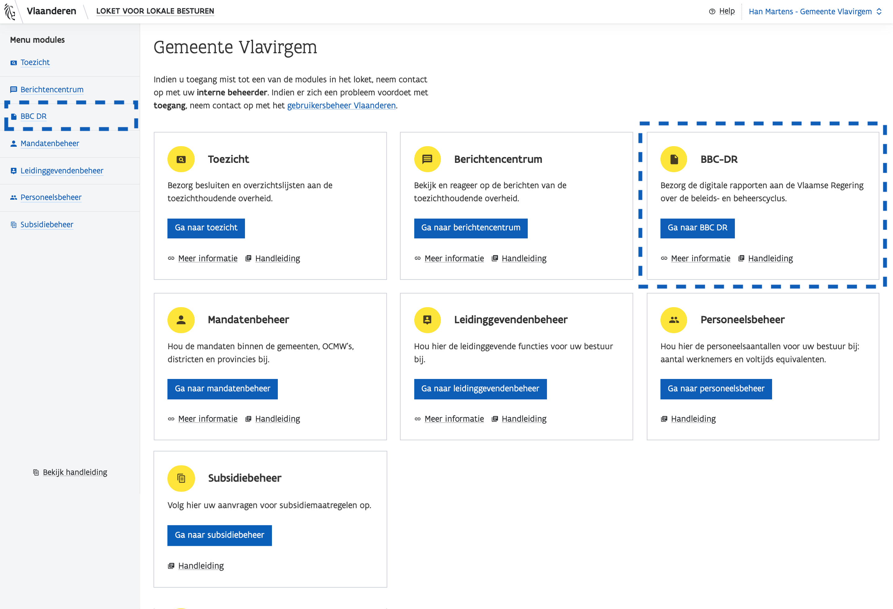
Overzicht & bekijken
In eerste instantie zal uw overzicht leeg zijn. Concepten en verstuurde dossiers komen in dit overzicht terecht. U kan een rapport aanleveren door op de knop Lever nieuw rapport aan aan te klikken.
Bekijken
U kan de details van een rapport bekijken door op Bekijk te klikken. U krijgt extra informatie zoals degene die het gewijzigd heeft, en wanneer het dossier al dan niet verstuurd werd.
Een verstuurd dossier kan enkel bekeken worden. U kan de bijlagen wel downloaden, maar niet aanpassen of verwijderen.
Een concept kan bewerkt, verwijderd of verstuurd worden.
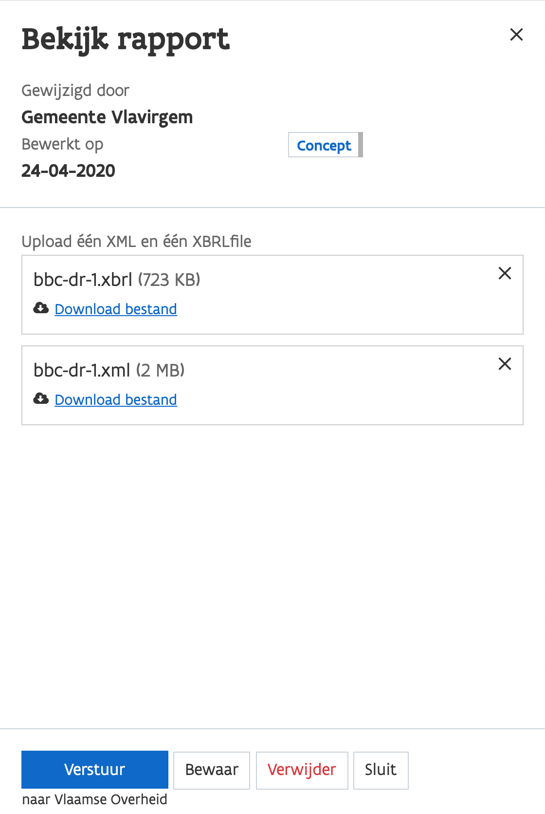
Een rapport aanleveren
Via de knop rechts Lever nieuw rapport aan kan u een nieuw rapport versturen.
XML & XBRL
Elke aanlevering in kader van digitale rapportering bestaat uit één XML file en één XBRL file per beleidsrapport. Maak dus per beleidsrapport een nieuwe aanlevering.
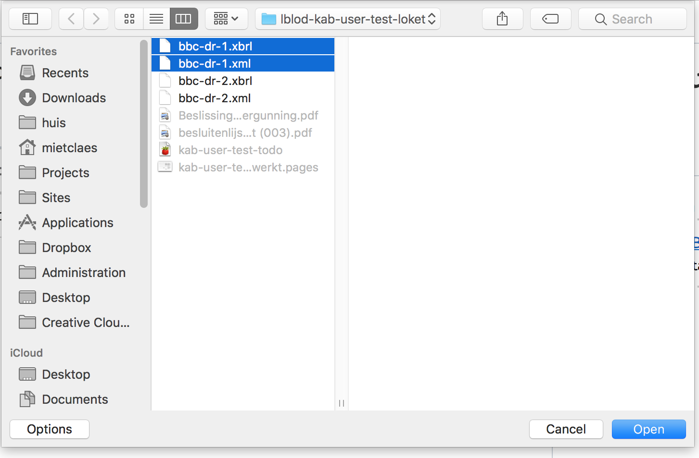
U kan niet versturen als u maar één bestand heeft opgeladen.
U kan versturen wanneer u twee bestanden heeft opgeladen. Kijk zeker na of het een xml is en een xbrl — en dat de bestanden bij hetzelfde beleidsrapport horen.
BBC beleidsrapporten en digitale rapportering: 11 handige tips
Doe de aanlevering van de digitale rapportering steeds via de tab BBC-DR in het loket. Bij elk beleidsrapport hoort een digitale rapportering, dit is altijd een duo: het XML-bestand en het XBRL-bestand.
Doe de inzending van de beleidsrapporten (de stukken behandeld door de raad) in het kader van het bestuurlijk toezicht altijd via de tab Toezicht in het digitaal loket.
Maak per beleidsrapport een nieuwe aanlevering.
Stuur met een inzending van een beleidsrapport onmiddellijk het raadsbesluit (correct ondertekend) mee.
Lever, bij voorkeur en indien mogelijk, alle (onderdelen van de) beleidsrapporten in PDF-formaat aan.
Beperk zoveel mogelijk het aantal bestanden per beleidsrapport (voorbeeld: budget, bijhorende toelichting en het raadsbesluit).
Geef een duidelijke naam aan de bestanden (voorbeeld van een duidelijke naamgeving: Budget_2015_gemeente_Lendelede).
Vermijd onvolledige inzendingen. Controleer voor het versturen of alle onderdelen van het beleidsrapport dat aan de raad werd voorgelegd ook in het dossier opgenomen zijn.
Gebruik het loket van het juiste bestuur. Elk bestuur heeft een eigen loket. Bezorg de digitale rapportering of de beleidsrapporten (en de raadsbesluiten) van het AGB of het APB dus niet via het loket van het gemeentebestuur of de provincie.
Geef de correcte gegevens in:
Type dossier: wil je een inzending doen van een meerjarenplan, dan kies je “meerjarenplan” als type dossier. Wil je een inzending doen van een “budget”, dan kies je “budget” als type dossier.
status: gebruik voor het meerjarenplan enkel de status origineel voor het 1ste meerjarenplan van de legislatuur. Aanpassingen van het meerjarenplan bij de opmaak van een budget (bijvoorbeeld bij budget 2016) krijgen de status ‘herziening’;
Bezorg, in geval van aanvullingen of correcties, een nieuwe inzending met het volledige beleidsrapport waarin de aanvullingen of correcties zijn opgenomen. Als die aanvullingen of correcties het voorwerp waren van een nieuwe raadsbeslissing, bezorg dan ook dat raadsbesluit.
Mandatenbeheer
Locatie
U kan via de overzichtspagina of via de knop "Menu modules" naar het mandatenbeheer navigeren. Hier kan mandatendatabank beheerd worden voor de Gemeenten, Districten, Provincies en OCMW’s.
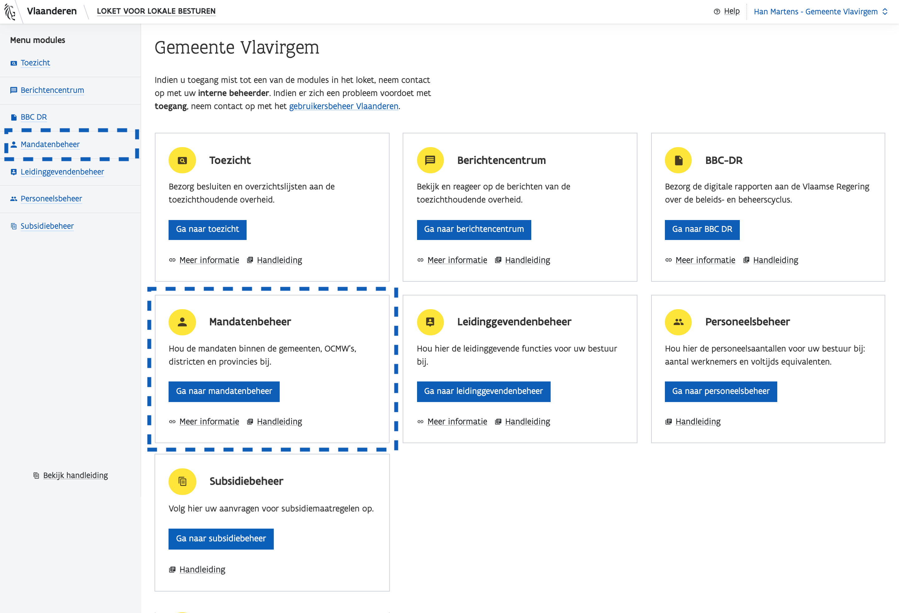
Hoe werkt het?
Overzicht
In het overzicht vindt u voor het bestuur waarvoor u aangemeld bent de bestuursorganen met hun mandatarissen. Voor elk mandaat is er een nieuwe rij in de tabel voorzien.
Totalen
Per bestuur staat er een limiet op het aantal mandaten. De som van de huidige situatie kan u bovenaan vinden, onder de knop Toon totalen en bestuursperiodes.
Leden aantallen
Momenteel wordt het maximum aantal leden niet meegenomen in deze applicatie. Besturen dienen zelf het juiste aantal onder controle te houden.
Bewerken
Elk mandaat kan bewerkt worden, door op een rij op "bewerk" te klikken.
U ziet nu al de mandaten voor de betreffende mandataris.
Eens u besloten heeft om een mandaat aan te passen, krijgt u de vraag of u de huidige situatie wil aanpassen, of fouten wil corrigeren. Dit onderscheid is van belang om een correctie historiek bij te kunnen houden.
Bij het aanpassen van een situatie kan u enkel het huidige mandataat beëindigen — daarna dient u een nieuw mandaat te starten. Op deze manier worden alle records bijgehouden, en kan u de historiek van een mandataris bijhouden. Gebruik indien nodig de beslissingsboom om de juiste keuze te maken.
Bewaar de wijzigingen voor elk mandaat apart door op corrigeer informatie te klikken op elk kaartje.
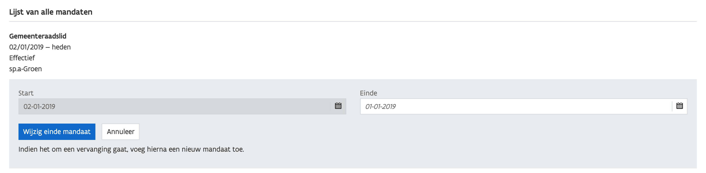
Bij het corrigeren van fouten mag alles aangepast worden. Het record wordt hier overschreven, en de historiek wordt aangepast.
Bewaar de wijzigingen voor elk mandaat apart door op corrigeer informatie te klikken op elk kaartje.
De juiste keuze maken bij het bewerken van een mandaat
Een nieuwe mandataris toevoegen: binnen de lijst van verkozenen
Via de knop rechtsboven Voeg mandataris toe kan u een nieuwe mandataris toevoegen.
U kan zoeken op voornaam, familienaam, rijksregisternummer of een combinatie van die drie zoekvelden.
U krijgt een overzicht van de personen op de lijst die overeenkomen met uw zoekterm(en).
Om een mandaat toe te voegen aan de persoon, klikt up op Voeg nieuw mandaat toe.
Daar krijgt u de optie om verschillende mandaten toe te kennen.
Verschillende mandaten
In de dropdown "mandaat" kan u kiezen uit verschillende mandaten, afhankelijk van het bestuur waarvoor u ingelogd bent.
Vul enkel de velden in die relevant zijn voor dat mandaat.
Einde mandaat
We nemen aan dat, indien het mandaat de volledige bestuursperiode inneemt, en er dus geen expliciete einddatum bestaat, het einde op 31 december gezet wordt (aan het einde van de bestuursperiode).
Gemeenteraadslid
Voor het mandaat gemeenteraadslid voert u het mandaat, de start, het einde en de fractie in (fracties zijn enkel nodig voor leden van de gemeenteraad, districtsraad of provincieraad).
Voorzitter van de gemeenteraad
Voor het mandaat voorzitter van de gemeenteraad vult u het mandaat, de start, het einde en de fractie in.
Burgemeester
Voor het mandaat burgemeester voert u het mandaat, de status, de beleidsdomeinen, de start en het einde in.
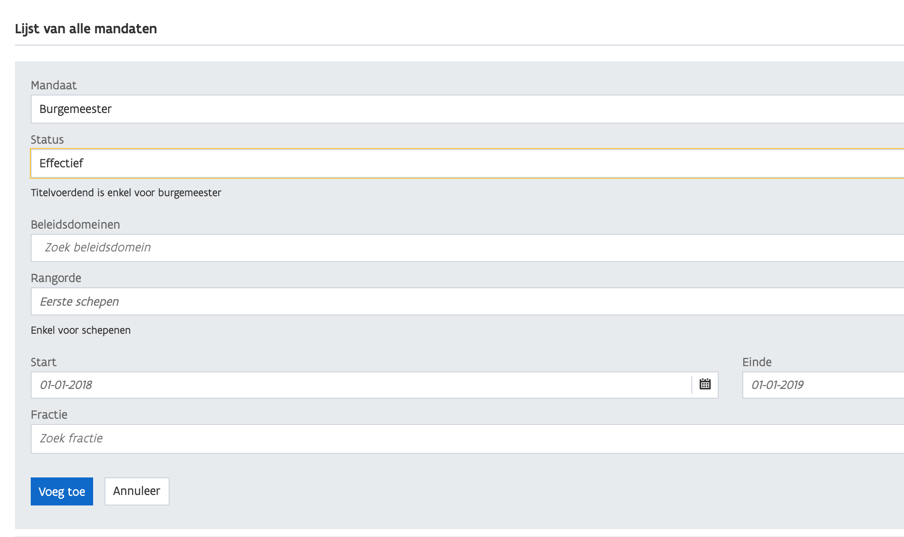
Burgemeester: status
De statussen kunnen zijn: effectief (dat is de standaard), titelvoerend, verhinderd of waarnemend.
Schepen
Voor het mandaat schepen voert u het mandaat, de bevoegdheden, de rangorde, de start en het einde in.
U kan ervoor kiezen om te zoeken in de bestaande beleidsdomeinen door te typen, of u kan zelf een beleidsdomein toevoegen. Het is mogelijk om meerdere beleidsdomeinen te hebben.
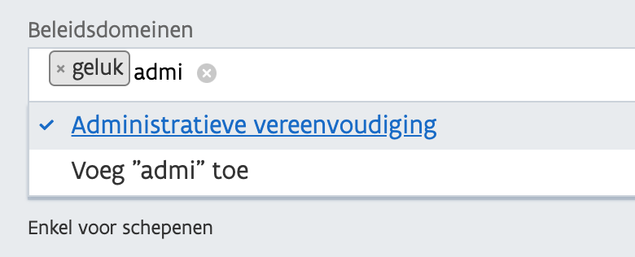
Een mandataris buiten de lijst van verkozenen toevoegen
Het kan gebeuren dat een persoon buiten de lijst van verkozenen toegevoegd moet worden. Dat kan met de knop rechtsboven Voeg iemand buiten de lijst toe.
Vervolgens kan u net zoals bij de andere mandatarissen een mandaat toevoegen.
De velden voor het toevoegen van een mandaat zijn hetzelfde als bij een mandataris binnen de lijst van verkozenen.
Fracties beheren
In het overzicht van het mandatenbeheer vindt u bovenaan rechts, links van de knop Voeg mandataris toe de knop Beheer fracties.
U komt terecht op de pagina Beheer fracties, waar u nieuwe fracties kan toevoegen of de naam van een fractie kan bewerken.
Een fractie toevoegen
Op de pagina Beheer fracties vindt u rechts bovenaan de knop Voeg fractie toe.
In de tabel verschijnt een nieuwe rij.
Vul de naam van de fractie in.
Nadat u de nieuwe fractie bewaard, blijft de fractie in de tabel staan, gesorteerd op naam.
Een fractie bewerken
Klik in de tabel op Bewerk, uiterst rechts in de rij van de fractie die u wil bewerken.
De naam van de fractie verandert nu in een invulveld.
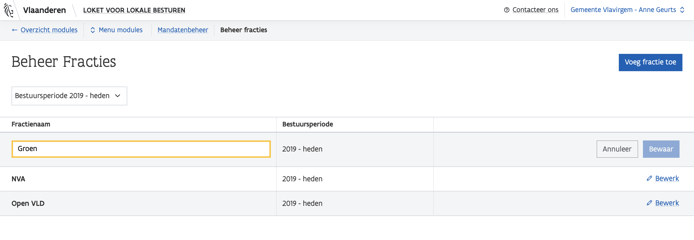
Bewerk de naam en sla op of annuleer.
Na het opslaan werd de naam van de fractie aangepast, en verschijnt deze in de kolom gesorteerd op naam.
Een fractie verwijderen
Een fractie verwijderen kan momenteel niet, omdat deze mogelijk gekoppeld kan zijn aan een mandataris. Om een fractie te verwijderen, neem contact op met LoketLokaalBestuur@vlaanderen.be.
Een mandaat verwijderen of mandataris aanpassen
Een mandaat verwijderen
Een mandaat verwijderen kan momenteel niet, omdat alle records bijgehouden worden. Indien u toch per abuis toch een foutief mandaat heeft toegevoegd, of er een heeft ontdekt, gelieve het door te geven aan LoketLokaalBestuur@vlaanderen.be.
Persoonlijke gegevens van een mandataris aanpassen
Gegevens van een mandataris aanpassen kan niet. Indien u een fout heeft ontdekt (schrijffout, geen roepnaam, rijksregisternummer, geslacht...), gelieve dit door te geven aan LoketLokaalBestuur@vlaanderen.be.
Mandatenbeheer scenario's
Vervanging schepen
Gender schepen (artikel 43, §3 DLB), waarbij de laatste schepen in rang vervangen wordt door het gemeenteraadslid van dezelfde lijst met de meeste naamstemmen.
Naamstemmen
Naamstemmen worden nu niet opgenomen in het huidige loket. Gelieve hier rekening mee te houden.
Genderbalans
De genderbalans wordt momenteel niet opgenomen in het loket. Gelieve hier rekening mee te houden.
Leden aantallen
Er staat geen check op het aantal leden. Gelieve deze cijfers in het oog te houden.
Einde mandaat
We nemen aan dat, indien het mandaat de volledige bestuursperiode inneemt, en er dus geen expliciete einddatum bestaat, het einde op 31 december gezet wordt (aan het einde van de bestuursperiode).
Aanmelden
Meld u aan als een gemeentebestuur en navigeer naar mandatenbeheer.
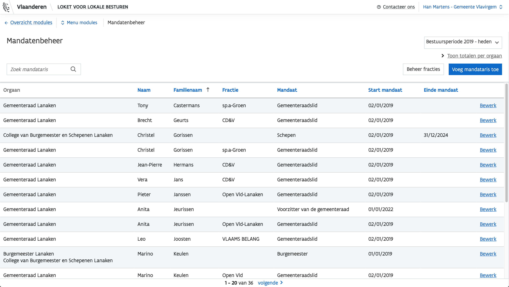
Zoek persoon 1
U kan de juiste persoon zoeken door de naam of achternaam in het zoekveld te typen, of door te sorteren op mandaat in de tabel.
Eens u op een mandaat klikt, krijgt u een overzicht van al de mandaten vam die persoon. Geslacht kan u bovenaan terugvinden, rangorde en lijst kan u onder het specifieke mandaat terugvinden.
Voorlopig kan men niet zoeken op rangorde, enkel op voornaam en familienaam van de mandataris. U kan wel sorteren op mandaat.
Klik op de naam in de kolom om te sorteren. Een pijltje zal verschijnen met de richting.
Mandaat schepen beëindigen van persoon 1
Zoek het mandaat Schepen, en klik Pas aan.
Kies Wijzig einde mandaat — het gaat hier om een wijziging in het mandaat, niet om een correctie, aangezien het mandaat van de persoon in kwestie stopgezet wordt.
Beëindig het mandaat, door het einde aan te passen naar de datum waarop het mandaat afloopt.
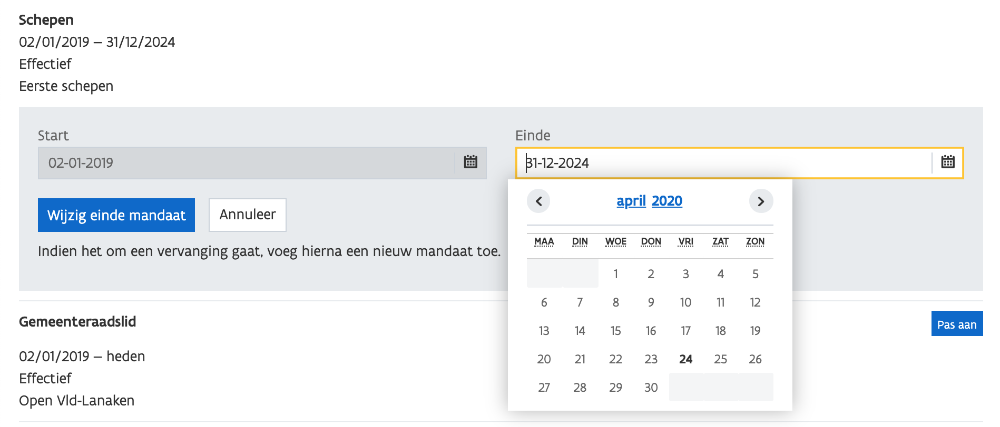
Het record wordt bijgehouden. Het wordt niet meer meegeteld in de huidige totalen bovenaan de tabel op de overzichtspagina indien het mandaat verlopen is.
Zoek persoon 2
Zoek persoon 2, die persoon 1 moet vervangen. Dat kan in de tabel (voeg mandataris toe). Indien de persoon niet op de lijst staat, kan u deze toevoegen buiten de lijst.
Klik op Bewerk, en vervolgens op Voeg nieuw mandaat toe om een mandaat toe te voegen aan de mandataris.
Geslacht kan u bovenaan terugvinden, rangorde en lijst kan u onder het specifieke mandaat terugvinden.
Naamstemmen worden niet opgenomen in het mandatenbeheer — raadpleeg daarvoor een andere bron.
Genderbalans
De genderbalans wordt momenteel niet opgenomen in het loket. Gelieve hier rekening mee te houden.
Persoon 2 instellen als opvolger mandaat schepen van persoon 1
Kies Schepen en vul de gevraagde velden in met de juiste beleidsdomeinen, rangorde, start- en einddatum.
Einde mandaat
We nemen aan dat, indien het mandaat de volledige bestuursperiode inneemt, en er dus geen expliciete einddatum bestaat, het einde op 31 december gezet wordt (aan het einde van de bestuursperiode).
De gegevens werden opgeslagen in de databank, en zijn nu raadpleegbaar.
Vervanging enkel in Raad voor Maatschappelijk Welzijn
Lid van de Raad voor Maatschappelijk Welzijn (artikel 68, §2 DLB), waarbij de samenstelling van de Raad voor Maatschappelijk Welzijn afwijkt van die van de Gemeenteraad (lid blijft gemeenteraadslid, maar wordt in de Raad voor Maatschappelijk Welzijn vervangen).
Aanmelden
Meld u aan als OCMW en navigeer naar mandatenbeheer.
Zoek persoon 1
U kan de juiste persoon zoeken door de naam of achternaam in het zoekveld te typen, of door te sorteren op mandaat in de tabel.
Zoek persoon 1 in de tabel en klik op Bewerk. Geslacht kan u bovenaan terugvinden, rangorde en lijst kan u onder het specifieke mandaat terugvinden.
Genderbalans
De genderbalans wordt momenteel niet opgenomen in het loket. Gelieve hier rekening mee te houden.
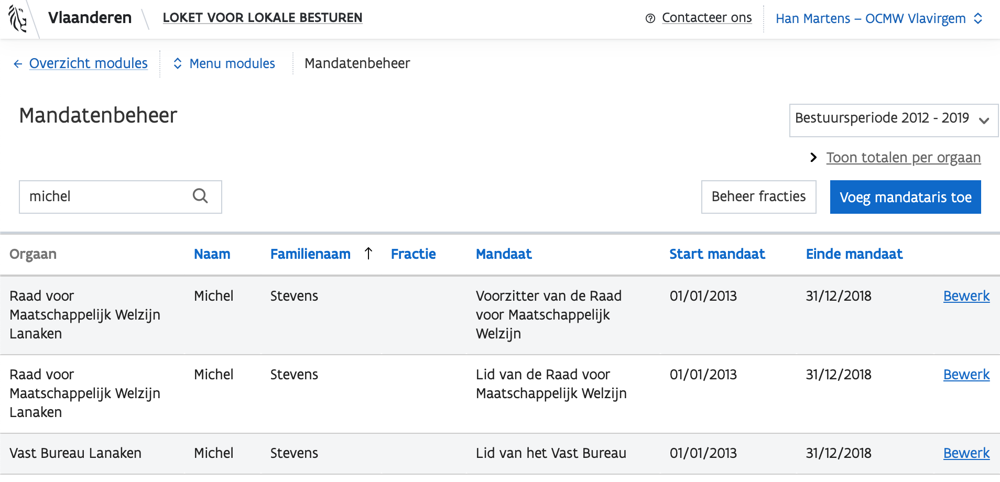
U kan ook sorteren op mandaat. Klik op de naam in de kolom om te sorteren. Een pijltje zal verschijnen met de richting.
Als u op Bewerk klikt, opent een overzicht van al de mandaten van de bettreffende mandataris.
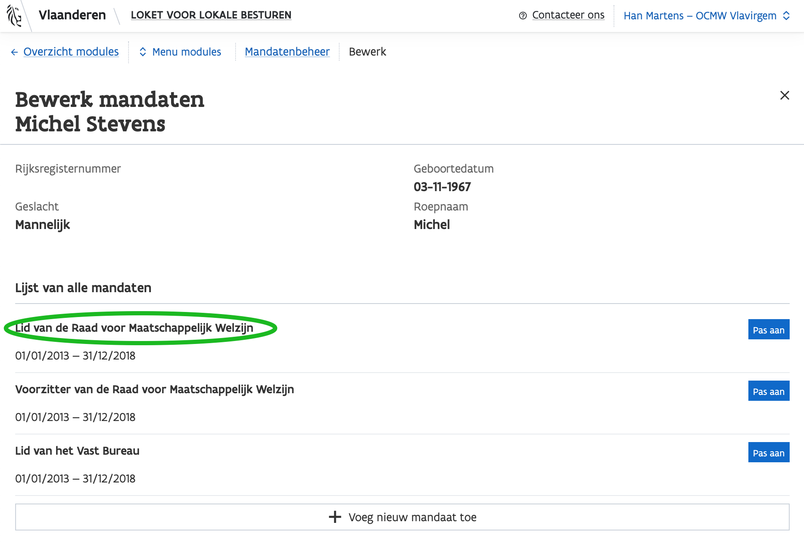
Mandaat Lid van de Raad voor Maatschappelijk Welzijn beëindigen van persoon 1
Zoek het mandaat Lid van de Raad voor Maatschappelijk Welzijn, en klik Pas aan.
Kies Wijzig einde mandaat — het gaat hier om een wijziging in het mandaat, niet om een correctie, aangezien het mandaat van de persoon in kwestie stopgezet wordt.
Beëindig het mandaat, door het einde aan te passen naar de datum waarop het mandaat afloopt.
Het record wordt bijgehouden. Het wordt niet meer meegeteld in de huidige totalen bovenaan de tabel op de overzichtspagina indien het mandaat verlopen is.
Zoek persoon 2
Zoek persoon 2, die persoon 1 moet vervangen. Dat kan via de tabel (voeg mandataris toe).
Het is mogelijk dat een persoon niet te vinden is in de tabel. Klik dan op "Voeg mandataris toe" om de persoon te zoeken. Indien deze niet verschijnt in de lijst, voeg een persoon toe buiten de lijst.
Genderbalans
De genderbalans wordt momenteel niet opgenomen in het loket. Gelieve hier rekening mee te houden.
Persoon 2 instellen als opvolger mandaat Lid van de Raad voor Maatschappelijk Welzijn van persoon 1
Voeg een nieuw mandaat toe aan persoon 2.
Voeg het mandaat Lid van de Raad voor Maatschappelijk Welzijn toe aan persoon 2, en vul de gevraagde velden met het juiste mandaat, de start- en einddatum.
Einde mandaat
We nemen aan dat, indien het mandaat de volledige bestuursperiode inneemt, en er dus geen expliciete einddatum bestaat, het einde op 31 december gezet wordt (aan het einde van de bestuursperiode).
Overige mandaten worden behouden
Persoon 1 kan zijn of haar andere mandaten gewoon behouden, ook in de Gemeenteraad.
Een titelvoerend burgemeester met waarnemend burgemeester en opvolger.
Een titelvoerend burgemeester met een einddatum en opvolger. De titelvoerende en waarnemende burgemeester worden opgevolgd door een effectieve burgemeester.
Zoek persoon 1
Zoek persoon 1 met mandaat burgemeester, en klik op Bewerk. Dan opent een overzicht van al de mandaten van de betreffende mandataris.
Einddatum oud mandaat burgemeester effectief wijzigen van persoon 1
Zoek het mandaat Burgemeester, en klik Pas aan.
Kies vervolgens Wijzig einde mandaat — het gaat hier om een wijziging in het mandaat, niet om een correctie, aangezien het mandaat van de persoon in kwestie stopgezet wordt.
Beëindig het mandaat, door het einde aan te passen naar de datum waarop het mandaat afloopt.
Voeg een nieuw mandaat burgemeester titelvoerend toe aan persoon 1
Vervolgens, voeg een nieuw mandaat toe aan persoon 1 als burgemeester, met status titelvoerend.
De records worden bijgehouden. Het wordt niet meer meegeteld in de huidige totalen bovenaan de tabel op de overzichtspagina indien het mandaat verlopen is. Titelvoerende en waarnemende burgemeesters worden meegenomen in de totalen bovenaan de tabel op de overzichtspagina (indien ze nog niet verlopen zijn).
Zoek persoon 2
Zoek persoon 2 die waarnemend burgemeester zou moeten worden, en klik op Bewerk. Dan opent een overzicht van al de mandaten van de betreffende mandataris.
Voeg mandaat het burgemeester waarnemend toe aan persoon 1
Voeg het mandaat burgemeester toe, met status waarnemend, aan persoon 2. Vul ook de andere velden in — met dezelfde einddatum als persoon 1.
De records worden bijgehouden. Het wordt niet meer meegeteld in de huidige totalen bovenaan de tabel op de overzichtspagina indien het mandaat verlopen is. Titelvoerende en waarnemende burgemeesters worden meegenomen in de totalen bovenaan de tabel op de overzichtspagina (indien ze nog niet verlopen zijn).
Zoek persoon 3
Zoek persoon 3, die de opvolger zal zijn — en klik op Bewerk. Dan opent een overzicht van al de mandaten van de betreffende mandataris.
Voeg het mandaat burgemeester effectief aan persoon 3 toe
Voeg het mandaat burgemeester toe (effectief), met als startdatum het moment waarop persoon 1 en 2 hun mandaat beëindigd wordt.
Einde mandaat
We nemen aan dat, indien het mandaat de volledige bestuursperiode inneemt, en er dus geen expliciete einddatum bestaat, het einde op 31 december gezet wordt (aan het einde van de bestuursperiode).
Voeg het mandaat "burgemeester" toe aan persoon 3.
Vul ook de andere velden in: status effectief, beleidsdomeinen en als startdatum de einddatum van de mandaten van persoon 1 en persoon 2.
De records worden bijgehouden. Het wordt nog niet meegeteld in de huidige totalen bovenaan de tabel op de overzichtspagina indien het mandaat nog niet gestart is.
Een gemeenteraadslid neemt ontslag, maar behoudt andere mandaten.
Een lid van de gemeenteraad/RMW dat ontslag neemt als raadslid maar in het Bijzonder Comité voor de Sociale Dienst (BCSD) blijft zitten.
Aanmelden
Meld u aan als OCMW en navigeer naar mandatenbeheer.
Zoek persoon 1
Zoek het raadslid in de tabel en klik Bewerk. Dan opent een overzicht van al de mandaten van de betreffende mandataris.
Mandaat gemeenteraadslid beëindigen van persoon 1
Klik op Pas aan bij Gemeenteraadslid om het mandaat te beëindigen.
Kies Wijzig einde mandaat — het gaat hier om een wijziging in het mandaat, niet om een correctie, aangezien het mandaat van de persoon in kwestie stopgezet wordt.
Beëindig het mandaat, door het einde aan te passen naar de datum waarop het mandaat afloopt.
Het record wordt bijgehouden. Het wordt niet meer meegeteld in de huidige totalen bovenaan de tabel op de overzichtspagina indien het mandaat verlopen is.
Andere mandaten blijven bestaan.
Andere mandaten kunnen blijven bestaan, ook in andere besturen zoals het OCMW.
Wissel Burgemeester-Schepen
Een wissel burgemeester-schepen, waarbij de burgemeester schepen wordt, en de schepen burgemeester wordt.
Aanmelden
Meld u aan als een gemeentebestuur en navigeer naar mandatenbeheer.
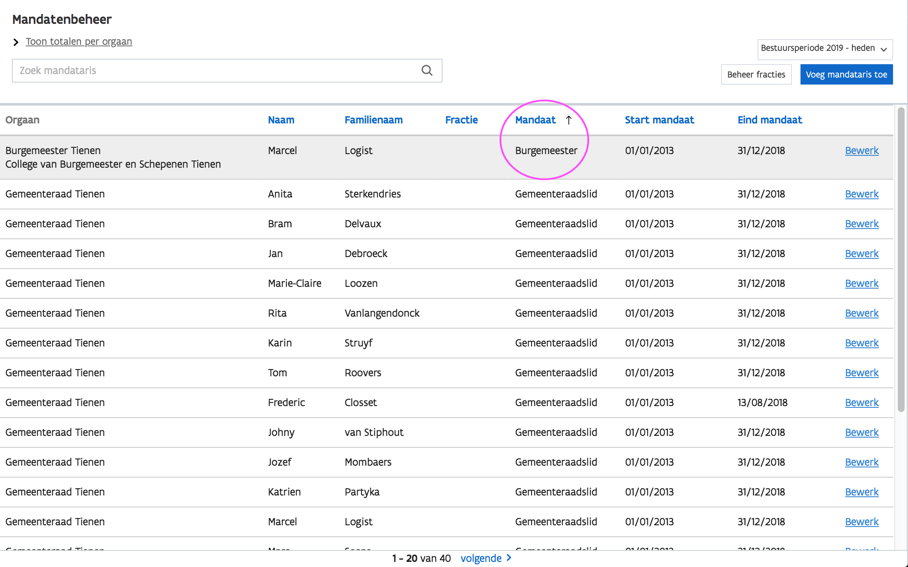
Zoek persoon 1
Zoek de burgemeester in de tabel door te sorteren op mandaat en klik Bewerk. Dan opent een overzicht van al de mandaten van de betreffende mandataris.
Beëindig mandaat burgemeester van persoon 1
Kies Wijzig einde mandaat — het gaat hier om een wijziging in het mandaat, niet om een correctie, aangezien het mandaat van de persoon in kwestie stopgezet wordt.
Beëindig het mandaat, door het einde aan te passen naar de datum waarop het mandaat afloopt.
Het mandaat werd aangepast. De totalen zullen de huidige situatie reflecteren.
Voeg een nieuw mandaat schepen toe aan persoon 1
Aangezien de burgemeester na dit mandaat schepen zal worden, Voeg een nieuw mandaat toe
Kies Schepen en vul de gevraagde velden in met de juiste beleidsdomeinen, rangorde, start- en einddatum. De startdatum zal de einddatum van het burgemeesterschap zijn.
Einde mandaat
We nemen aan dat, indien het mandaat de volledige bestuursperiode inneemt, en er dus geen expliciete einddatum bestaat, het einde op 31 december gezet wordt (aan het einde van de bestuursperiode).
Het mandaat werd aangepast. De totalen zullen de huidige situatie reflecteren.
Vervolgens kan u de opvolger aanpassen in de mandatendatabank.
Zoek persoon 2
Zoek de opvolger van de burgemeester, persoon 2, en klik Bewerk. Dan opent een overzicht van al de mandaten van de betreffende mandataris.
Beëindig het mandaat schepen van persoon 2
Zoek het mandaat Schepen en klik op Pas aan.
Kies Wijzig einde mandaat — het gaat hier om een wijziging in het mandaat, niet om een correctie, aangezien het mandaat van de persoon in kwestie stopgezet wordt.
Beëindig het mandaat, door het einde aan te passen naar de datum waarop het mandaat afloopt — dat is dezelfde datum waarop het mandaat burgemeesteer voor persoon 1 afloopt.
Geef een nieuw mandaat burgemeester aan persoon 2
Voeg vervolgens een nieuw mandaat toe.
Vul de gevraagde velden in: mandaat burgemeester, effectief, de juiste beleidsdomeinen, start en einde. De startdatum zal dezelfde zijn als de einddatum van het mandaat schepen voor deze persoon.
Einde mandaat
We nemen aan dat, indien het mandaat de volledige bestuursperiode inneemt, en er dus geen expliciete einddatum bestaat, het einde op 31 december gezet wordt (aan het einde van de bestuursperiode).
Het mandaat werd aangepast, en wordt nu getoond in de tabel en detailpagina van de mandataris (vernieuw de pagina indien u het niet dadelijk kan zien).
Beëindigen van het mandaat schepen zonder opvolger.
Een gemeentebestuur dat met 7 schepenen start, maar het met één schepen minder doet na een ontslag tijdens de legislatuur.
Aanmelden
Meld u aan als een gemeentebestuur en navigeer naar mandatenbeheer.
U kan de totalen bekijken door op de link Toon totalen en bestuursperiodes te klikken.
Zoek persoon
Zoek de mandataris waarvan u het mandaat schepen wil beëindigen, door de voor- of achternaam te typen in het zoekveld, of door te sorteren op mandaat.
Klik op Bewerk de detailpagina, waarin u al de mandaten van de mandataris kan zien.
Beëindig het mandaat schepen van de persoon
Klik op Pas aan bij het mandaat schepen.
Kies Wijzig einde mandaat — het gaat hier om een wijziging in het mandaat, niet om een correctie, aangezien het mandaat van de persoon in kwestie stopgezet wordt.
Beëindig het mandaat, door het einde aan te passen naar de datum waarop het mandaat afloopt.
Het gemeentebestuur kan verder met 6 schepenen
Het mandaat werd aangepast. De tabel, de detailpagina en de totalen zullen de huidige situatie reflecteren.
Het gemeentebestuur kan verder met 6 schepenen zonder probleem.
Leden aantallen
Momenteel wordt het maximum aantal leden niet meegenomen in deze applicatie. Besturen dienen zelf het juiste aantal onder controle te houden.
Titelvoerend burgemeester verhinderd, opgevolgd door een waarnemend burgemeester
Voorbeeld uit deze legislatuur: Burgemeester Theo Francken van Lubbeek wordt tot staatssecretaris benoemd in de federale regering; Tania Roskams wordt waarnemend burgemeester vanaf 22.12.2014; zij wordt als schepen opgevolgd door Geert Bofyn; Theo Francken wordt titelvoerend burgemeester en blijft ook raadslid tijdens de ganse legislatuur.
Aanmelden
Meld u aan als het gemeentebestuur Lubbeek en navigeer naar mandatenbeheer.
Zoek naar Theo Francken
Zoek naar Theo Francken, en klik op Bewerk naast een van de mandaten om de mandaten aan te passen.
Beëindig mandaat burgemeester effectief voor Theo Francken
Zoek het mandaat Burgemeester, en klik Pas aan.
Dat kan door de voor- of achternaam te typen in het zoekveld, of door te sorteren op mandaat.
Kies Wijzig einde mandaat — het gaat hier om een wijziging in het mandaat, niet om een correctie, aangezien het mandaat een andere status krijgt.
Beëindig het mandaat, door het einde aan te passen naar de datum waarop het mandaat burgemeester effectief afloopt, en dus titelvoerend kan beginnen.
Voeg nieuw mandaat burgemeester titelvoerend toe aan Theo Francken
Klik Voeg nieuw mandaat toe om de nieuwe status van burgemeesterschap aan te duiden.
Voeg de status Titelvoerend toe van het nieuwe mandaat. De startdatum is het einde van het effectieve burgemeesterschap. De einddatum is tot het einde van de bestuursperiode (of tot wanneer er een opvolger is, ontslag, sterfte, ...)
Zoek naar Tania Roskams
Dat kan door de voor- of achternaam te typen in het zoekveld, of door te sorteren op mandaat.
Klik op Bewerk naast een van de mandaten om de mandaten aan te passen.
Beëindig het mandaat schepen voor Tania Roskams
Zoek het mandaat Schepen van Tania Roskams.
Kies Wijzig einde mandaat — het gaat hier om een wijziging in het mandaat, niet om een correctie, aangezien het mandaat van de persoon in kwestie stopgezet wordt.
Beëindig het mandaat, door het einde aan te passen naar de datum waarop het mandaat afloopt.
Voeg nieuw mandaat burgemeester waarnemend toe aan Tania Roskams
Nu er geen conflict meer is met het burgemeesterschap, kan een nieuw mandaat waarnemendBurgemeester toevoegd worden.
Kies Burgemeester en vul de gevraagde velden in met status waarnemend, de juiste beleidsdomeinen, start- en einddatum.
Einde mandaat
We nemen aan dat, indien het mandaat de volledige bestuursperiode inneemt, en er dus geen expliciete einddatum bestaat, het einde op 31 december gezet wordt (aan het einde van de bestuursperiode).
De startdatum is de het moment waarop Theo Francken als titelvoerend burgemeester start. De einddatum is tot het einde van de legislatuur (of tot wanneer er een opvolger is, ontslag, sterfte, ...)
Zoek naar Geert Bovyn
Dat kan door de voor- of achternaam te typen in het zoekveld, of door te sorteren op mandaat.
Klik op Bewerk naast een van de mandaten om de mandaten aan te passen.
Voeg het mandaat schepen toe voor Geert Bovyn, als opvolger van Tania Roskams.
Voeg een nieuw mandaat toe aan Geert Bovyn.
Kies Schepen en vul de gevraagde velden in met de juiste beleidsdomeinen, rangorde, start- en einddatum.
Einde mandaat
We nemen aan dat, indien het mandaat de volledige bestuursperiode inneemt, en er dus geen expliciete einddatum bestaat, het einde op 31 december gezet wordt (aan het einde van de bestuursperiode).
Het mandaat werd toegevoegd aan Geert Bovyn als opvolger van Tania Roskams. De totalen zullen de huidige situatie reflecteren.
Leidinggevendenbeheer
Locatie
U kan via de overzichtspagina of via de knop "Menu modules" naar het leidinggevendenbeheer navigeren. Hier houdt u de leidinggevende functies van uw bestuur bij.
Hoe werkt het?
Overzicht
In het overzicht vindt u de verschillende functies die voorzien zijn voor het bestuur waarvoor u aangemeld bent.
Indien uw bestuur geen leidinggevende functies dient in te geven — bijvoorbeeld OCMW's, krijgt u een boodschap te zien gelijkaardig aan "Voor het bestuursorgaan OCMW Gent moeten er geen leidinggevende functies bijgehouden worden.".
Beheer contactgegevens
Mailadres, telefoonnummer en adres kunnen voor elke functie ingevuld worden, als u eerst op Bekijk en bewerk aanstellingsperiodes klikt, en vervolgens op Bewerk.
U kan vervolgens de velden vervolledigen.
Zoek naar het juiste adres in de lijst.
Indien u een adres kiest dat een busnummer kan hebben, kan u nu het busnummer ingeven.
Indien u een adres kiest dat geen busnummer kan hebben, hoeft u niets te doen.
Klik vervolgens op Bewaar contactgegevens, of klik op Verwerp wijzigingen om uw bewerkingen ongedaan te maken.
Aanstellingsperiodes bekijken en bewerken
De leidinggevendendatabank werkt met aanstellingsperiodes, het equivalent van een Curriculum Vitae — maar dan voor meerdere personen; of in dit geval functionarissen.
We houden bij in welke periode functionarissen werden aangesteld voor een bepaalde functie. Voor elke nieuwe aanstellingsperiode, maken we een nieuw record aan.
Klik op "Bekijk en bewerk aanstellingsperiodes" om de aanstellingsperiodes te zien.
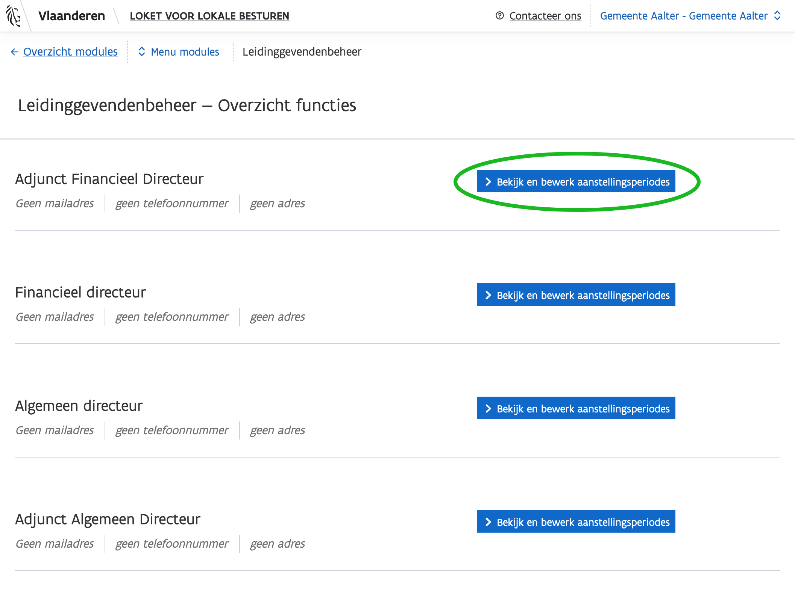
In eerste instantie zullen er geen aanstellingsperiodes ingevuld zijn. U krijgt dan volgend scherm te zien:
Indien u wel al aanstellingsperiodes heeft ingegeven voor die functie, kan u de aanstellingsperiodes bekijken — zowel de huidige aanstellingsperiodes als de vorige. Hierbij hebben we volgende bemerkingen:
Indien u start met het ingeven met leidinggevenden, geef enkel de huidige situatie in.
Aanstellingsperiodes uit het verleden (voor 01/01/2019) hoeven niet ingevuld worden.
Aanstellingsperiodes die in de toekomst liggen worden niet getoond in de publieke leidinggevendendatabank.
Als uw bestuur bv. geen adjunct-algemeen directeur heeft, moet er uiteraard niets toegevoegd worden.
Vervolgens opent er een scherm waar u de mogelijkheid krijgt om een functionaris te kiezen die u kan aanstellen voor de functie. U kan zoeken tussen bestaande functionarissen, of een nieuwe functionaris aanmaken.
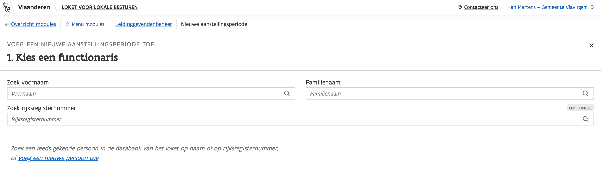
Stap 1: een functionaris aanstellen
Als u voor het eerst een fuctionaris wil aanstellen, zijn er waarschijnlijk nog geen functionarissen beschikbaar — omdat er nog geen functionarissen aangemaakt werden. Eens u er functionarissen heeft in zitten, kan u zoeken tussen bestaande functionarissen en deze gegevens hergebruiken wanneer u deze nodig heeft.
Een functionaris zoeken
U kan in de velden zoeken op voornaam, familienaam of rijksregisternummer.
Als u er zeker van bent dat de persoon die u wil aanstellen nog niet in de databank zit, kan u ook rechtstreeks op "voeg een nieuwe functionaris toe" klikken voor u gaat zoeken.
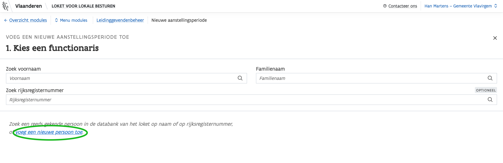
Stap 2: Een aanstellingsperiode ingeven
U kan de start- en einddatum ingeven van de aanstellingsperiode, samen met de status (aangesteld of waarnemend).
Het is niet verplicht om de einddatum in te geven — dat zal in de overzichtstabel verschijnen als Onbepaald.
Een aanstellingsperiode bewerken
U bewerkt een aanstellingsperiode enkel indien u een correctie doorvoert. Enkele voorbeelden:
De aanstellingsperiode duurt langer of korter dan oorspronkelijk ingegeven;
De status werd foutief ingegeven (waarnemend of aangesteld);
De start- of einddatum werd foutief ingegeven;
De einddatum was voorheen niet bekend (onbepaald), en is nu wel bekend;
U maakt een nieuwe aanstellingsperiode aan wanneer u een nieuwe situatie of verandering vastlegt. Enkele voorbeelden:
Een nieuwe functionaris mag een functie uitoefenen voor een bepaalde of onbepaalde tijd;
Er breekt een nieuwe aanstellingsperiode aan voor een functionaris;
Een functionaris neemt een functie van een andere functionaris over;
Een functionaris wordt opnieuw aangesteld na een periode van inactiviteit;
Een functionaris krijgt een andere status (van waarnemend naar aangesteld, of van aangesteld naar waarnemend).
Klik op "Bewerk periode" om de correctie door te voeren.
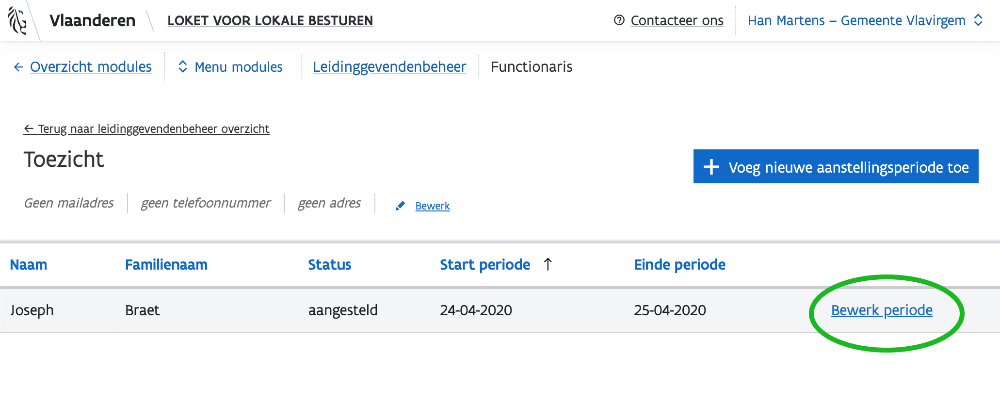
U kan de start- en einddatum aanpassen, en de status in die aanstellingsperiode.
Een aanstellingsperiode verwijderen of gegevens van een functionaris aanpassen
Een aanstellingsperiode verwijderen
Een aanstellingsperiode verwijderen kan momenteel niet, omdat alle records bijgehouden worden. Indien u toch per abuis toch een foutieve aanstellingsperiode heeft toegevoegd, of er een heeft ontdekt, gelieve het door te geven aan LoketLokaalBestuur@vlaanderen.be.
Gegevens van een functionaris aanpassen
Gegevens van een functionaris aanpassen kan niet. Indien u een fout heeft ontdekt (schrijffout, geen roepnaam, rijksregisternummer...), gelieve dit door te geven aan LoketLokaalBestuur@vlaanderen.be.
De publieke leidinggevendendatabank
Automatisch gepubliceerd
Het leidinggevendenbeheer staat direct in contact met de publieke leidinggevendendatabank. De gegevens worden automatisch gepubliceerd. Zorg ervoor dat de contactgegevens zoals email en telefoon algemene contactgegevens zijn voor uw leidinggevende, en niet de persoonlijke gegevens.
Personeelsbeheer
Locatie
U kan via de overzichtspagina of via de knop "Menu modules" naar het personeelsbeheer navigeren. Hier houdt u de personeelsaantallen voor uw bestuur bij.
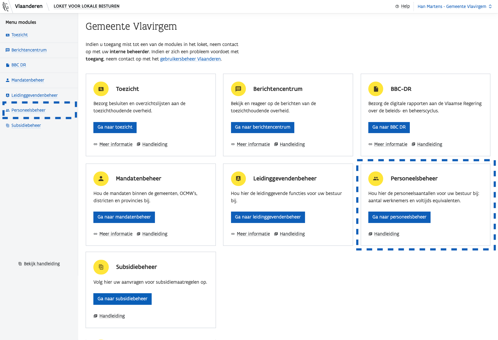
Hoe werkt het?
Overzicht
In het overzicht vindt u de verschillende personeelsaantallen die u kan invullen:
Voltijd Equivalenten — VTE
Werknemers — Koppen
De personeelsaantallen dienen in het personeelsbeheer jaarlijks ingevuld te worden. Indien u de aantallen van dit jaar nog niet up-to-date heeft gebracht, ziet u het label Aantallen niet actueel. Indien de aantallen wel up-to-date zijn, ziet u de datum waarop de aantallen laatst werden aangepast en de totalen (voltijds, deeltijds) in het overzicht.
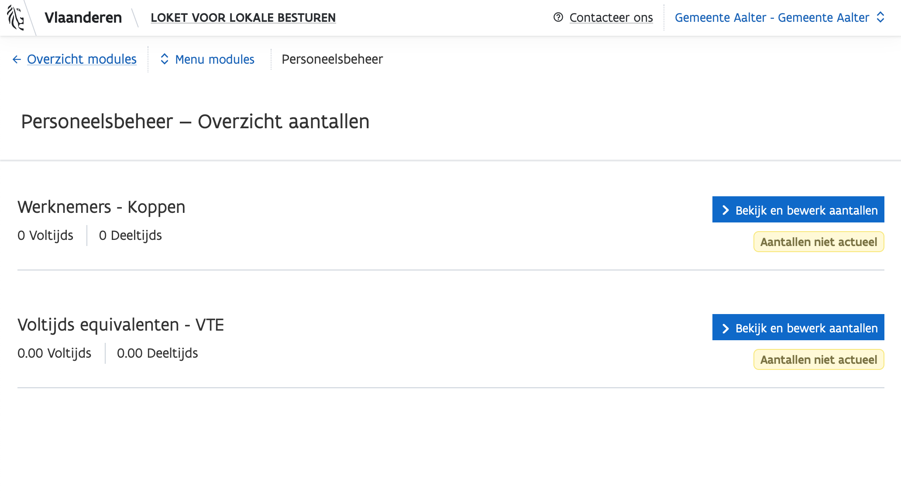
Personeelsaantallen aanvullen
Om de aantallen up-to-date te brengen, vult u de cijfers zoals gevraagd per onderdeel. De totalen worden automatisch berekend:
Voltijds & Deeltijds
Vastbenoemd & Contractueel
Mannen & Vrouwen
Totaal aantal VTE's of koppen per niveau (A, B, C, D, E)
Aanpassingen worden automatisch opgeslagen op het moment dat u ze invult. U kan de cijfers te allen tijde aanpassen. U kan niet terugkeren naar de vorige cijfers.
Voltijd Equivalenten — VTE
Iedere tewerkstelling moet uitgedrukt worden in een percentage (kommagetal) van een voltijds tewerkgesteld personeelslid. Eén VTE is een voltijds equivalent of tewerkgesteld volgens een regime van 38/38sten. Wie minder dan voltijds tewerkgesteld is wordt pro rato meegerekend wat de VTE betreft.
Bijvoorbeeld een personeelslid dat 4/5den werkt of 30,4 uur werkt in de 38-uren werkweek zal worden meegeteld als 0,8 VTE.
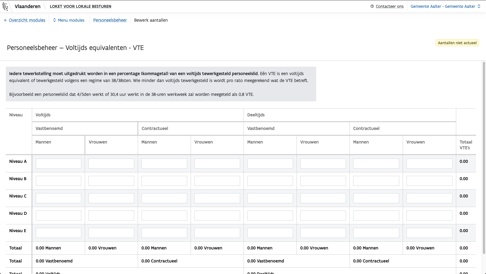
Werknemers — Koppen
Een personeelslid dat voltijds of deeltijds aan de slag is bij het lokaal bestuur wordt als 1 kop meegeteld. Elke afzonderlijke juridische band (door middel van een vaste benoeming of arbeidsovereenkomst) wordt afzonderlijk geteld. Meerdere aanstellingen/contracten voor één persoon worden geteld als meerdere koppen.
De aantallen voor Voltijds Equivalenten mogen geen kommagetallen bevatten.
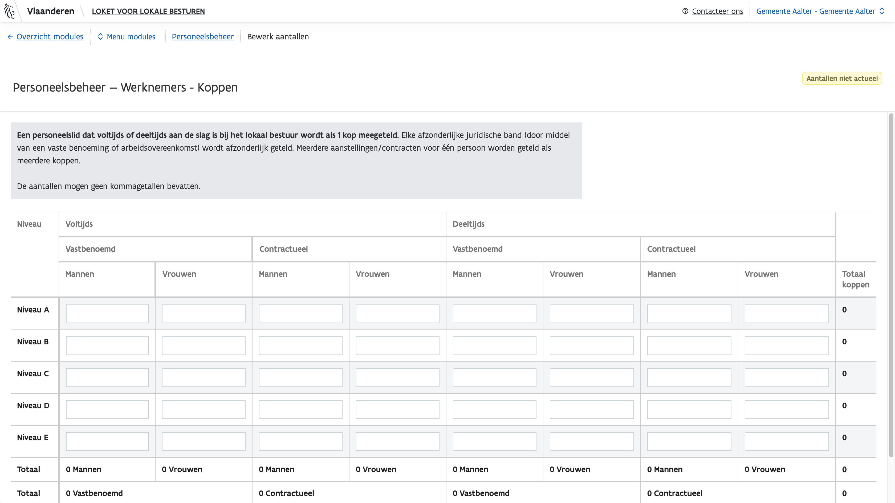
Subsidiebeheer
De module subsidiebeheer laat u toe om subsidies digitaal aan te vragen en op te volgen.
Subsidies die u niet terug vindt in de keuzelijsten zijn mogelijk nog niet digitaal beschikbaar, nog niet gestart of inmiddels afgelopen. Bekijk meer informatie over de subsidies die je via het loket kan aanvragen.
Locatie
U kan via de overzichtspagina of via de knop "Menu modules" naar het subsidiebeheer navigeren. Hier kan u nieuwe subsidieaanvragen indienen waarvoor een oproep is gelanceerd.
Overzicht & bekijken
Overzicht
In eerste instantie zal uw overzicht leeg zijn. Concepten en verstuurde subsidieaanvragen komen in dit overzicht terecht. U kan een nieuwe subsidie aanvragen door op de knop Vraag nieuwe subsidie aan te klikken.
Bekijken
U kan de details van uw subsidieaanvraag bekijken door op Bekijk te klikken.
Subsidieaanvragen met status Concept: deze aanvraag is nog niet verzonden naar de Vlaamse overheid, u kan de velden in het formulier nog aanpassen en aanvullen.
Subsidieaanvragen met status Verstuurd: deze aanvraag is verzonden naar de Vlaamse overheid, u kan de velden in het formulier niet meer aanpassen. Indien u vragen heeft of een fout wil rechtzetten, stuur een mail naar LoketLokaalBestuur@vlaanderen.be.
Een nieuwe subsidie aanvragen
Via de knop rechts Vraag nieuwe subsidie kan u een nieuwe subsidie aanvragen.
Het formulier invullen en versturen
Afhankelijk van de subsidieoproep waarvoor u een aanvraag wenst in de dienen, krijgt u andere velden om in te vullen.
Aanvrager
Het veld Aanvrager wordt automatisch ingevuld, met de bestuurseenheid waarmee u bent ingelogd in het loket van lokale besturen. Dit veld kan u niet aanpassen.
Wenst u een subsidie in te dienen voor een andere bestuurseenheid (vb. OCMW), dan klikt u op de dubbele pijltjes, rechtsboven het scherm, en kiest u voor Wissel van bestuurseenheid. U logt in met de gewenste bestuurseenheid en start een nieuwe subsidieaanvraag.
Kies subsidie
Kies eerst de subsidiemaatregel
Kies de subsidiemaatregel kiezen, de soort subsidie. U kan scrollen doorheen de lijst, of typen in het zoekveld om het type dossier te vinden.
Selecteer daarna de reeks, of periode, waarvoor u een subsidie wenst aan te vragen.
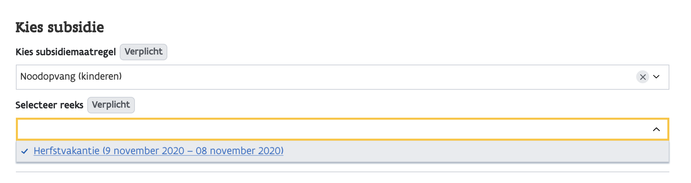
U kan één reeks per subsidieaanvraag indienen. Indien u ook subsidies wenst aan te vragen voor een andere periode, dient u een nieuwe subsidieaanvraag in.
Indien de reeks die u zoekt niet wordt getoond, dan
dan wordt deze niet beschikbaar gesteld;
is deze nog niet gestart;
is deze inmiddels afgelopen.
Vervolgens verschijnen de overige velden, die afhankelijk zijn van het type subsidiemaatregel en de reeks die u gekozen heeft.
Contactgegevens contactpersoon
Geef de contactgegevens op van de persoon die gecontacteerd zal worden bij de opvolging van dit dossier: voornaam, familienaam, telefoonnummer en mailadres.
Denk er ook aan dat, moest deze persoon er niet zijn, anderen eventueel kunnen overnemen.
Betaling
Voer het bankrekeningnummer in waarop de subsidie gestort mag worden.
Indien u het bankrekeningnummer heeft ingevoerd van het Gemeentefonds, hoeft u geen bijlage toe te voegen.
Indien u een ander bankrekeningnummer kiest, dient u een bevestingsbrief toe te voegen dat dit rekeningnummer gebruikt mag worden, ondertekend door de burgemeester en medeondertekend door de financieel directeur, in PDF formaat.
Specifieke velden
Vervolgens ziet u velden die specifiek zijn voor het type subsidie en de reeks die u gekozen heeft. In het voorbeeld hier onderziet u de subsidie voor Noodopvang kinderen.
Vul al de velden in, en klik dan op Vraag subsidie aan bij Vlaamse overheid. U kan tussentijds concepten bewaren.
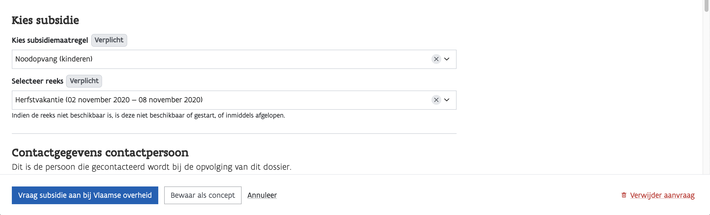
Enkel concepten kunnen verwijderd worden. Verstuurde aanvragen niet.
Opvolging
Een verstuurde subsidieaanvraag kan enkel bekeken worden. U kan de bijlagen wel downloaden, maar niet aanpassen of verwijderen. Indien u een fout heeft ontdekt of een vraag heeft, neem contact op met LoketLokaalBestuur@vlaanderen.be.
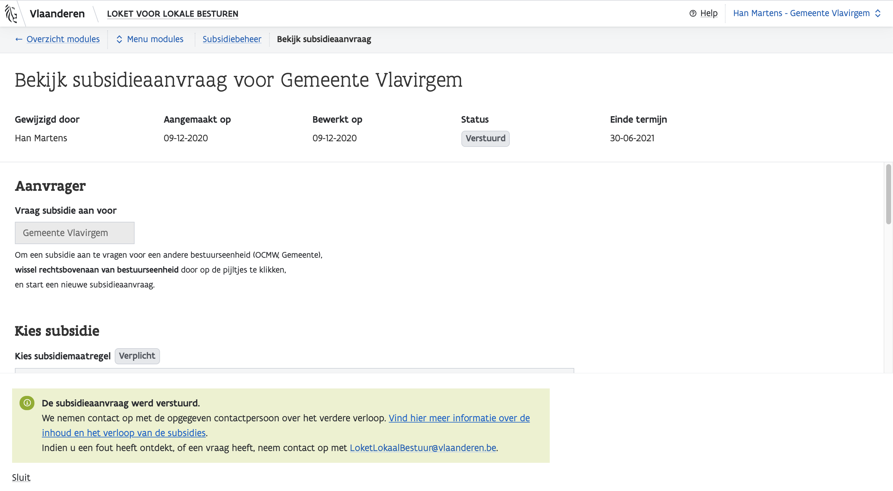
Een wijziging doorvoeren
Een verstuurde subsidieaanvraag kan enkel bekeken worden. U kan de bijlagen wel downloaden, maar niet aanpassen of verwijderen. Indien u een fout heeft ontdekt of een vraag heeft, neem contact op met LoketLokaalBestuur@vlaanderen.be.
Gebruikersbeheer
Om toegang te krijgen tot het loket lokale besturen, moet u de nodige toegangsrechten gekregen hebben via het gebruikers- en toegangsbeheer. Dit gebeurt door de lokale beheerder die in elk bestuur aanwezig is. Meestal is dit de secretaris/algemeen directeur, griffier of iemand die door de organisatie werd aangeduid. U gaat dus best bij hen ten rade als u niet weet wie uw lokale beheerder is.
Aanmelden en navigeren
Om als lokale beheerder rechten toe te kennen aan gebruikers, surft u naar https://vo-gebruikersbeheer.vlaanderen.be. Meld u aan met uw favoriete aanmeldingssysteem.
Kies vervolgens de juiste doelgroep, en het bestuur waar u zich voor wil aanmelden.
Klik op 'snel rechten toekennen', om te starten.
Zoeken naar de juiste persoon
U krijgt een overzicht te zien, waar u kan zoeken naar de juiste persoon.
Zoeken naar de juiste rechten
Vervolgens kan u voor de geselecteerde persoon de juiste rechten zoeken. Zoek naar "Loket voor lokale besturen".
Rechten toekennen
Klik op "Loket voor lokale besturen" om rechten toe te kennen. Dit gebeurt op basis van context (niet meer op basis van rol zoals vroeger).
U kan een gebruiker tot bepaalde onderdelen van de applicatie toegang verlenen of ontkennen aan de hand van die contexten. Eens een gebruiker toegang heeft tot een bepaalde context, kan deze gebruiker alle acties uitvoeren voor de bijbehorende onderdelen. Een gebruiker kan rechten krijgen voor meerdere contexten.
Er zijn 7 contexten, voor 7 onderdelen van de applicatie:
Context Gebruiker Mijn Toezicht: recht op onderdeel
toezicht.
Context Gebruiker Berichtencentrum: recht op onderdeel berichtencentrum.
Context Gebruiker BBC DR: recht op onderdeel BBC-DR.
Context Gebruiker Mandatenbeheer: recht op onderdeel mandatenbeheer.
Context Gebruiker Personeelsbeheer: recht op onderdeel personeelsbeheer.
Context Gebruiker Subsidies: recht op onderdeel subsidiebeheer.
— u kan de rechten al toekennen, maar de applicatie is nog niet beschikbaar voor elk bestuur.
Geef een reden op om het recht toe te kennen.
Voltooien
U wordt gevraagd om het toekennen van rechten te bevestigen, waarna een boodschap verschijnt indien het proces met succes voltooid werd.